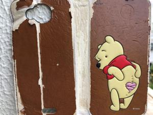
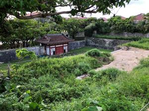
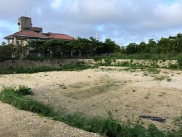
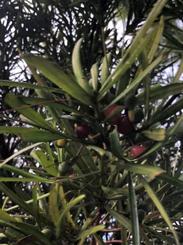

うるがいの話 ある日
最新: スマホのカバー
うるがいとは 前提知識です
カニの画像をクリックすると『うるがいの話』サイトを表示します
うるがい(ｳﾙｶﾞｲ urugai)とは、『もずくがに』の名前でとても大きくなります。
たながー（ﾀﾅｶﾞｰtanagaa）とは手長えびのことで、何種類かあり大きいのは車 エビぐらいになります。
ぶながー(bunagaa)とは、赤い髪の毛、赤い身体、そして身長は１ｍ２０ｃｍ ぐらい、川の蟹を食べているの目撃された。場所は沖縄県国頭郡大宜味村のと ある村僕の隣近所に住んでいる爺さんから、聞いた話です。
2021年08月02日 (月）
スマホのカバー
16:43




おととい、ジョギングから帰ると腰巻ポーチにスマホを挟んででいたスマホの
カバーが無くなっているのに気づく。古いし、汚いし、ま、いいかと特に探す
ことはしなかった。昨日、雨が上がった夕方５時過ぎ走っていると道にカバー
が落ちていた。汚いし、名前も書いているので誰も拾わなかった、え、一応持
って帰る。アイホンのタッチ画面は、特になにも被せていないのでズボンに入
れていると時々、なぜか電話が意図しないところに架かったりして困っていた
それで、外に出る時は５年ほど前に買ったこのスマホのカバーで挟んでタッチ
画面をカバーしていた。昨日、首里の円覚寺跡でスマホを使った後、直ぐに電
話が架かってきた。ん！、コドモからだ、「電話した！」という、おや、腰巻
ポーチに入れた筈のスマホから誤ってコドモに電話を架けたようだ。ゴメン、
間違って電話をかけたみたいと謝る。家に帰り、ネットで『勝手に電話がかか
ってしまった！誤発信を防ぐ４つの方法』のサイトをみつける。誤発信を防ぐ
ための「習慣づけ」で『通話の後に電話アプリを終了させること！』、うん、
『その際は、ワンタップで電話がかかってしまう「履歴」の画面ではなく「キ
ーパッド」の画面にして終了させるのがポイント。』、なるほど！、これだね
原因は！！と私は履歴画面から電話する事が多い、納得、早速実践することに
戻ったボロボロのスマホのカバーは、とりあえず使わないことにする。